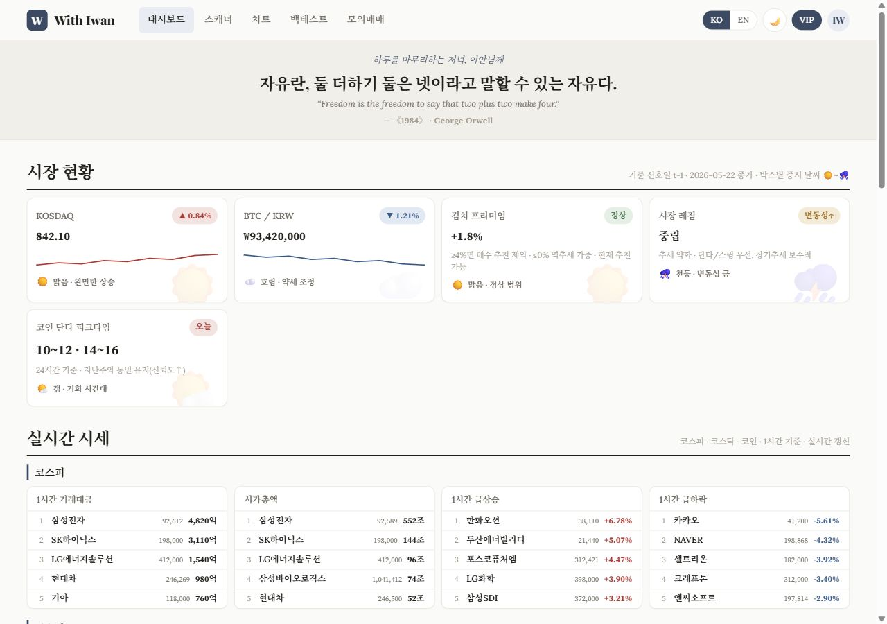
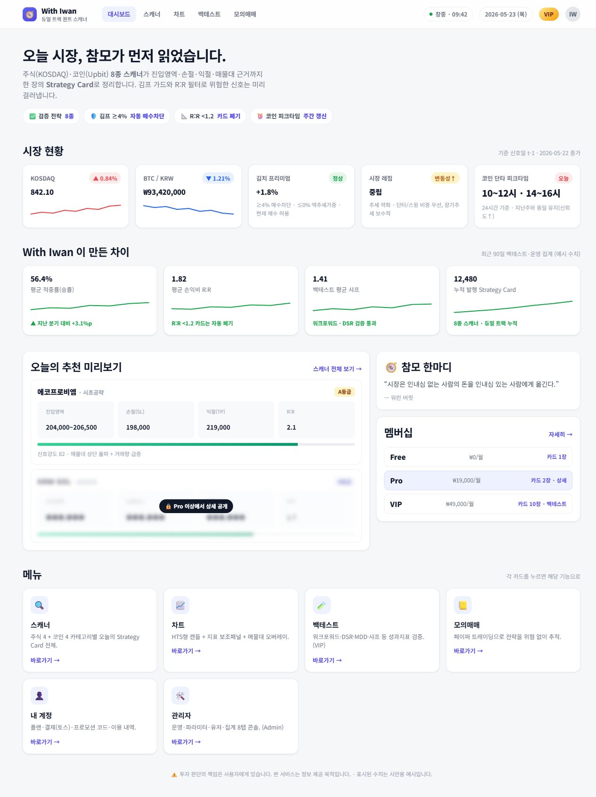
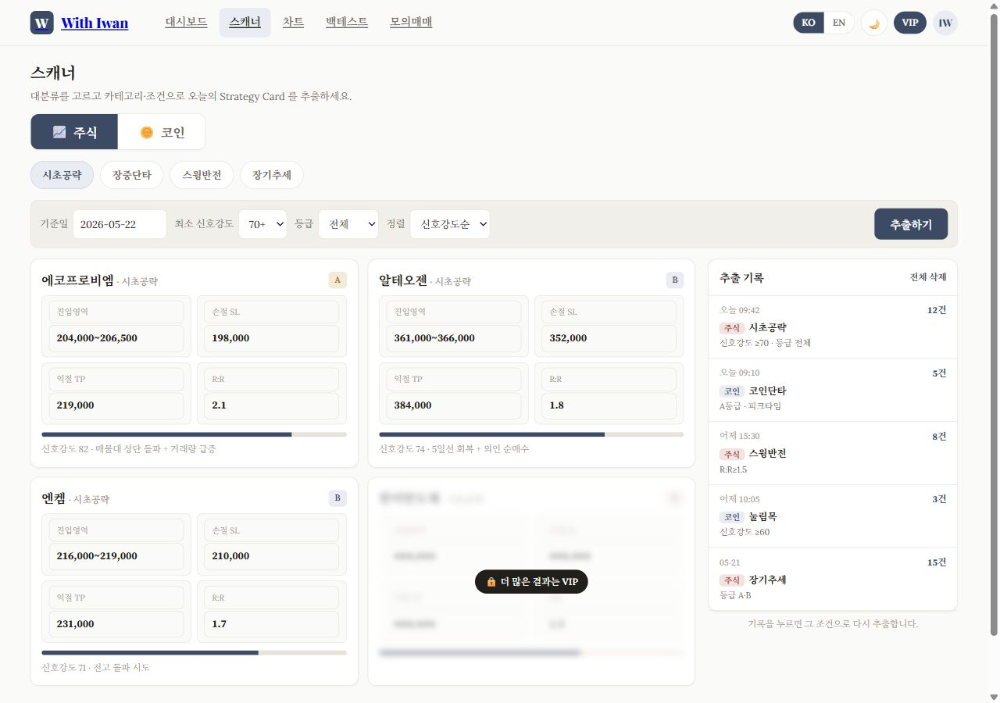
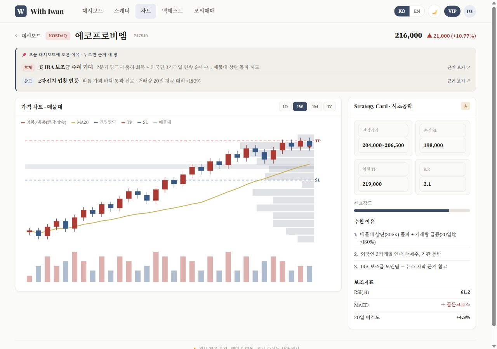
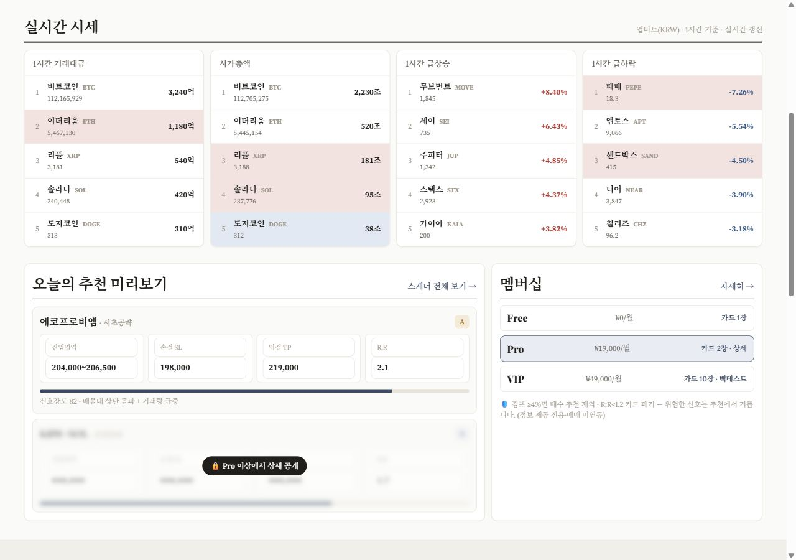
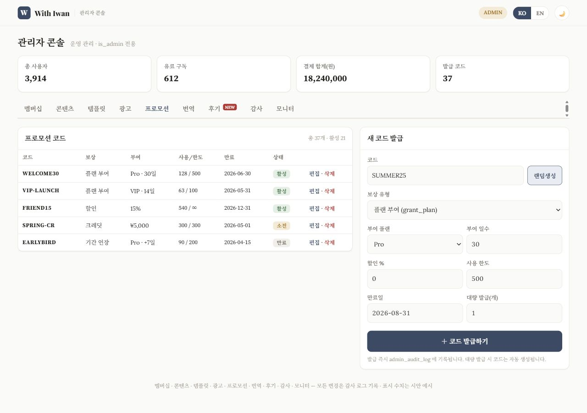
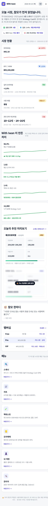

WITH IWAN v2.4
참모와 함께하는 주식 · 코인 퀀트 스캐너
KOSDAQ 주식과 Upbit 코인을 함께 보는 듀얼 트랙 추천 시스템. 모든 추천은 종목명이 아니라 진입영역 · 손절 · 익절 · 매물대 근거를 담은 Strategy Card로 출력
Streamlit · Plotly · SQLite · 토스페이먼츠Free / Pro / VIP 멤버십룰 기반 참모 'iwan의 한 마디'Claude Code 병렬 서브에이전트로 개발

대시보드오늘의 시장 현황과 코인 피크타임, 실시간 시세

메인 화면시장 현황 · With Iwan이 만든 차이 · 오늘의 추천 미리보기 · 멤버십

스캐너주식 · 코인 8개 카테고리, Strategy Card 형태의 추천 출력

차트HTS 스타일 차트에 진입영역 · 손절 · 익절 · 매물대 오버레이

실시간 시세거래대금 · 급등 · 급락 상위 종목과 추천 미리보기

관리자회원 · 프로모션 코드 · 광고 · 번역 관리 8탭

모바일반응형 한 열 레이아웃